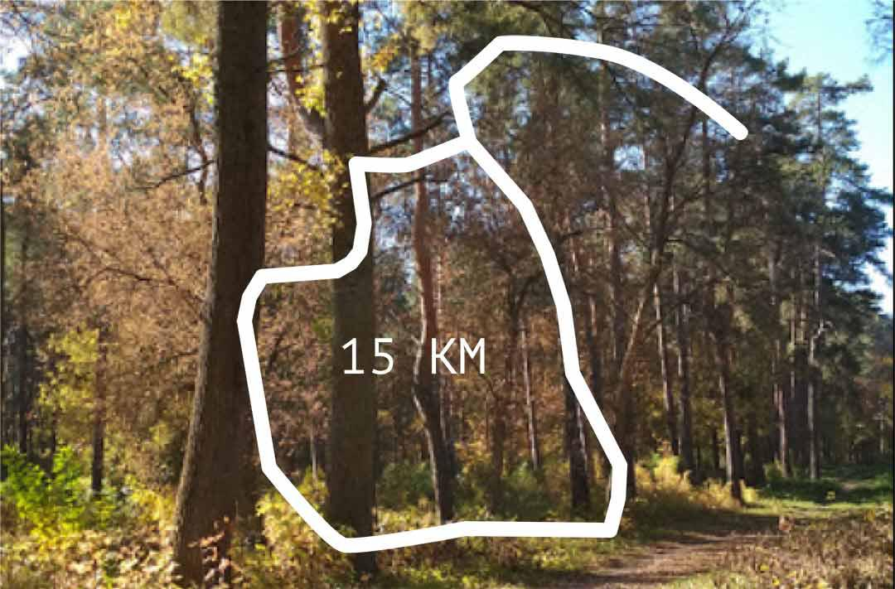
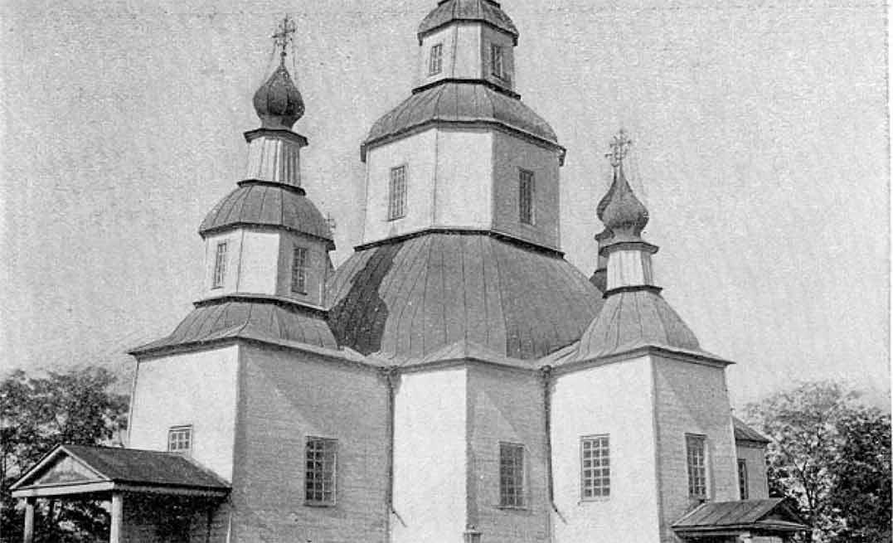
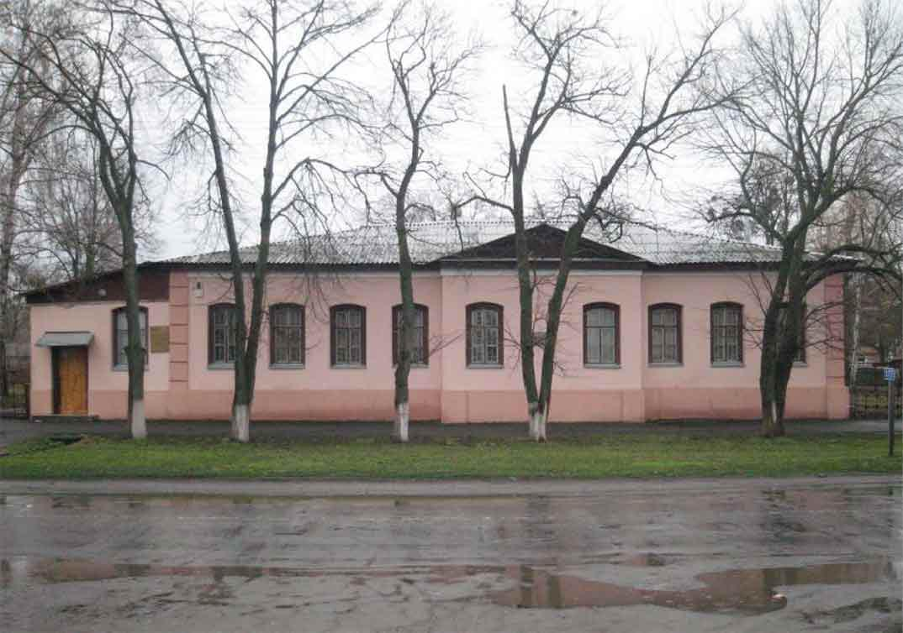
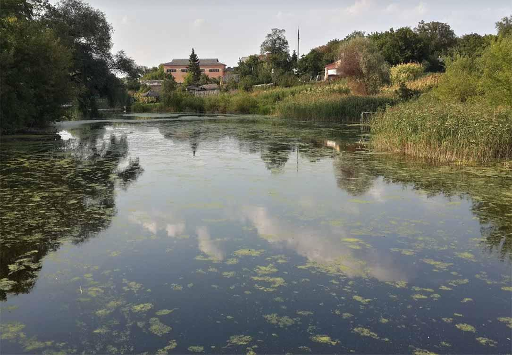

onRover - cycle maps
Що цікавого на маршруті?

Історична довідка

Благовіщенська церква (1800 р.)
Одна з найцікавіших старовинних споруд Лохвиці. Була збудована у 1800 році і була першою мурованою будівлею у місті. На цьому місці вже існувала дерев'яна церква Благовіщення 1740 року, але вона згоріла. Слово “Благовіщення” має два значення: 1. у християнстві блага вістка від архангела Гавриїла до Діви Марії про те, що вона непорочно зачне від Святого Духа і народить Ісуса Христа, Сина Божого, Месію. Християнське свято, що відзначає цю подію. третє за значенням свято в православії, після Великодня та Різдва. Святкується 25 березня за григоріанським календарем, близько до весняного рівнодення, і 7 квітня за юліанським. У звичаях європейських народів асоціювалося з приходом весни, початком нового землеробського року. Цікаво, що церква збудована у формах класицизму з елементами російського стилю, а давній іконостас прикрашений бароковою різьбою. Зараз Благовіщенська церква - діючий храм УПЦ МП.
Краєзнавчий музей
У старовинному одноповерховому будинку повітового суду 1865 споруди в місті Лохвиця був розміщений краєзнавчий музей імені Г. Сковороди. У 1919 році був заснований музей, колекція якого розташовувалася спочатку на базі реального місцевого училища. Г. Сковорода - письменник і мислитель, уродженець цього краю, саме тому музей носить ім`я поета. Частина експозиції присвячена его творчості і життя.
Сoсновий парк
Прикрасою міста Лохвиця є Сосновий парк. Розташований він майже в центрі міста і займає територію близько 50 га. Народився парк у грізні роки становлення радянської влади. 4 лютого 1921 року голова Лохвицького політвиконкому Степан Кузьмич Луценко на V повітовому з’їзді рад висловлює думку про закладення парку відпочинку для трудящих, як символу нового, вільного життя. У 1922 році під час перших суботників комсомольці та молодь міста посадили чудовий сосновий парк, який став улюбленим місцем для відпочинку лохвиччан та гостей містечка.
Аудіогід
00:05:42
01:05:01
Відгуки
Чи поїдете цим маршрутом ще?
Ваші враження чи зауваження